A solar-graph watchface: the sun's real elevation for your place and date, drawn across the day, with the weather and three complications you choose. Every pixel is rendered at the watch's resolution and snapped to its 64-colour palette.
Pebble's design guidelines ask for colours that are "small in number", high contrast that reads "in a wide variety of lighting conditions", and animation that adds "character and flourish". Pebble Time's own look was flat, saturated colour with crisp shapes. These five styles bring that to the glow; the soft gradient stays as an option. Each uses the same short run of palette colours for each stretch of the day (yellow, orange and pink at sunrise; yellow, cyan and blue by day; pink and purple at dusk), and over a flat glow the header text gets a 1 px black outline. Try them above with the Glow style switch, or on the watch under Settings, Glow style.
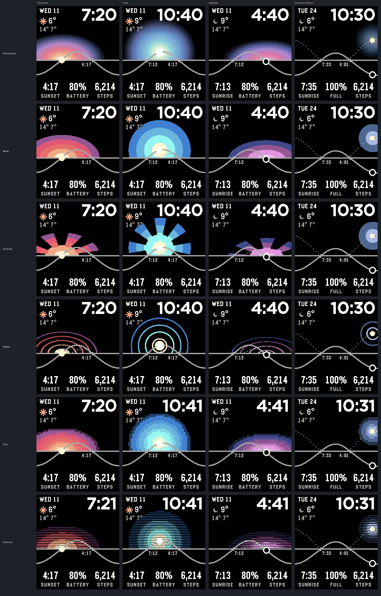
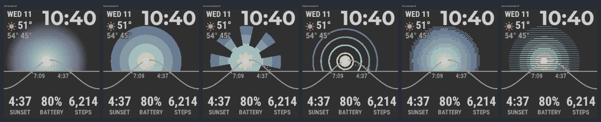
| Style | What it is | Backlight off |
|---|---|---|
| Soft | The current smooth, dithered bloom, closest to the Apple face. | Hazy |
| Bands | Four or five flat concentric rings, like a retro sunset poster. The most direct translation into Pebble's flat-colour language. | Crisp |
| Sunburst | Alternating flat rays around a bright core. It turns one degree a minute, so the face moves a little every time you look. | Crisp |
| Ripples | Thick coloured rings with black between, like Pebble's line icons. The most minimal. | Crisp |
| Pixel | The glow in 4 × 4 blocks with checkerboard edges, a nod to the original Pebble's dithering. | Good |
| Scanlines | Horizontal stripes that thin toward the edge, a retro striped sun. | Thin stripes fade |
Recommendation: Bands as the everyday look. It is the closest to Pebble's design language and the clearest with the backlight off. Sunburst if you want more personality.
Real screenshots from the Pebble SDK's emery emulator running the built face in London, through 11 November and on moonlit nights later in the month, with the weather served by the Pebble app's weather plugin. The emulator shows colours as the Time 2 panel does.
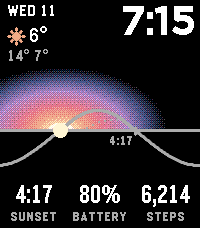
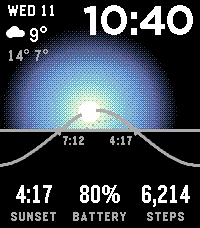
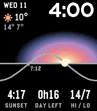
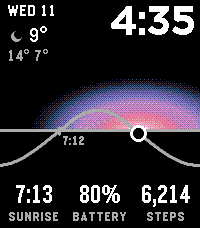
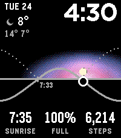
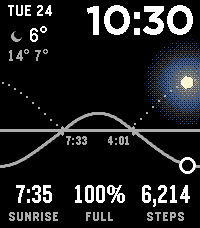
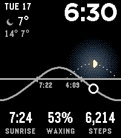
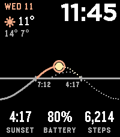
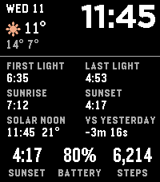
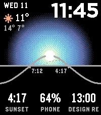
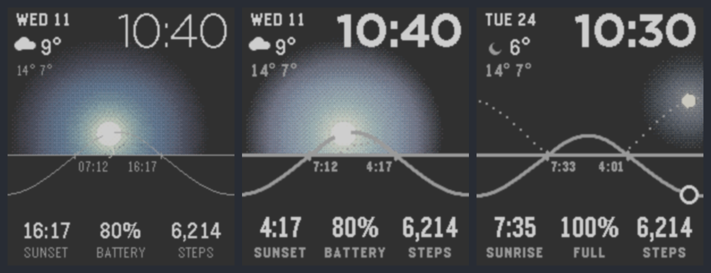
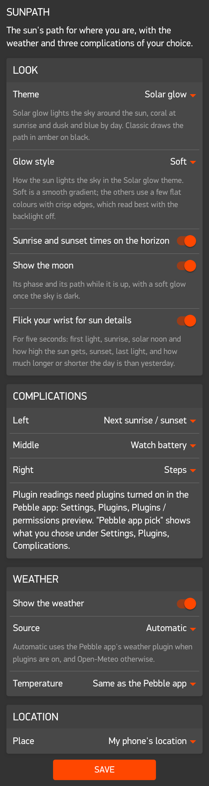
The settings page opens from the gear next to Sunpath in the Pebble app. Each choice is named by what appears on the watch.
Weather defaults to Automatic. When the Plugins preview is on, that means the Pebble app's own weather plugin, so the face needs no API key and follows the places and units you set in the Pebble app. Otherwise it falls back to Open-Meteo.
The coordinate fields appear only if you choose to type in a place.
Three slots along the bottom, each set from the settings page. Watch readings work with no phone at all; weather readings come from the Pebble app's weather plugin, or from Open-Meteo when plugins are off; plugin readings need the Plugins preview turned on in the Pebble app.
| Option | Shows | Example | From |
|---|
Every colour is one of the panel's 64 (two bits per channel); names are the SDK's GColor constants. Each swatch shows the nominal value on the left and, on the right, how the Time 2's reflective panel shows it, from the SDK's own screenshot correction. That muting is why the warm colours read as cream, peach and coral on the watch.